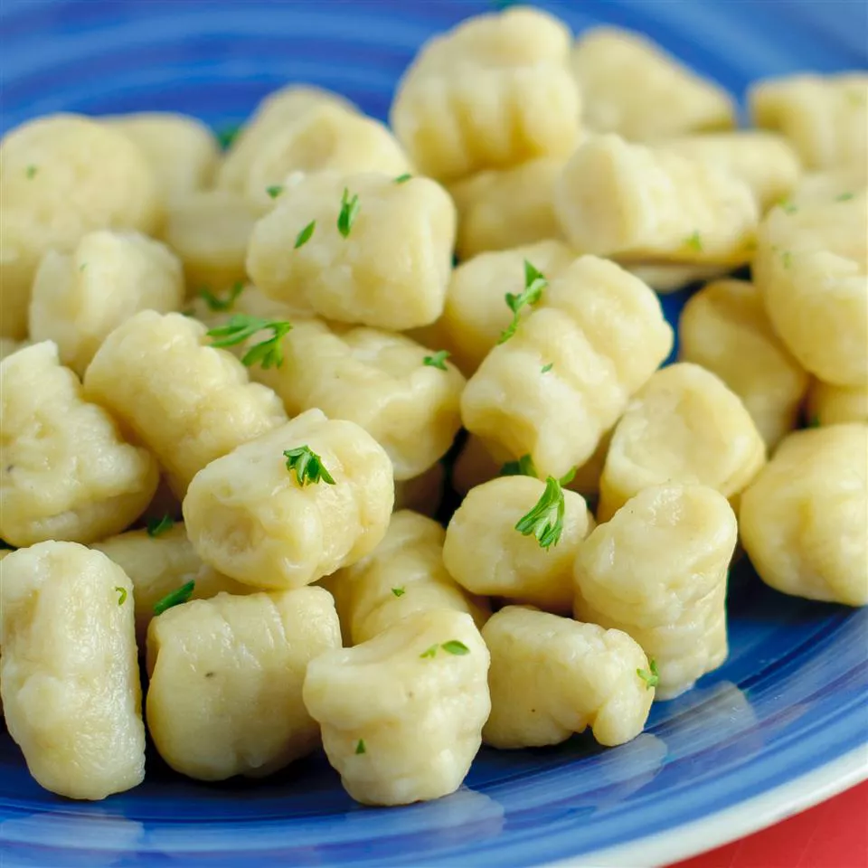

Gnocchi

Description
Gnocchi is simple to make with just three ingredients: mashed potato, flour, and egg.
This recipe is one my family has used for generations.
Ingredients
- 2 potatoes,peeled
- 2 cups all-purpose flour
- 1 egg
Steps
-
Bring a large pot of salted water to a boil, add potatoes and cook until tender but still firm, about 15 minutes. Drain, cool, and mash with a fork or potato masher.
-
Combine 1 cup mashed potato, flour, and egg in a large bowl. Knead until dough forms a ball. Shape small portions of the dough into long "snakes". On a floured surface, cut snakes into 1/2-inch pieces.
-
Bring a large pot of lightly salted water to a boil. Drop in gnocchi and cook for 3 to 5 minutes or until gnocchi have risen to the top; drain and serve.